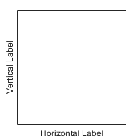
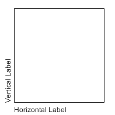
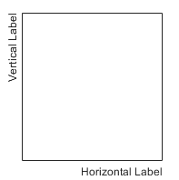
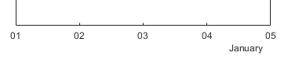
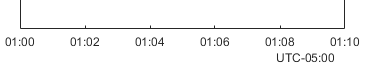

DatetimeRuler Properties
Control axis with datetime values
DatetimeRuler properties control the
appearance and behavior of an x-axis, y-axis,
or z-axis that shows datetime values. Each individual axis has its
own ruler object. By changing property values of the ruler, you can modify certain
aspects of a specific axis.
Use dot notation to refer to a particular ruler and property. Access the ruler objects
through the XAxis, YAxis, and
ZAxis properties of the Axes
object.
ax = gca; co = ax.XAxis.Color; ax.XAxis.Color = 'blue';
Appearance
Color of the axis line and labels, specified as an RGB triplet, a hexadecimal color code, a color name, or a short name.
For a custom color, specify an RGB triplet or a hexadecimal color code.
An RGB triplet is a three-element row vector whose elements specify the intensities of the red, green, and blue components of the color. The intensities must be in the range
[0,1], for example,[0.4 0.6 0.7].A hexadecimal color code is a string scalar or character vector that starts with a hash symbol (
#) followed by three or six hexadecimal digits, which can range from0toF. The values are not case sensitive. Therefore, the color codes"#FF8800","#ff8800","#F80", and"#f80"are equivalent.
Alternatively, you can specify some common colors by name. This table lists the named color options, the equivalent RGB triplets, and the hexadecimal color codes.
| Color Name | Short Name | RGB Triplet | Hexadecimal Color Code | Appearance |
|---|---|---|---|---|
"red" | "r" | [1 0 0] | "#FF0000" |
|
"green" | "g" | [0 1 0] | "#00FF00" |
|
"blue" | "b" | [0 0 1] | "#0000FF" |
|
"cyan"
| "c" | [0 1 1] | "#00FFFF" |
|
"magenta" | "m" | [1 0 1] | "#FF00FF" |
|
"yellow" | "y" | [1 1 0] | "#FFFF00" |
|
"black" | "k" | [0 0 0] | "#000000" |
|
"white" | "w" | [1 1 1] | "#FFFFFF" |
|
"none" | Not applicable | Not applicable | Not applicable | No color |
This table lists the default color palettes for plots in the light and dark themes.
| Palette | Palette Colors |
|---|---|
Before R2025a: Most plots use these colors by default. |
|
|
|
You can get the RGB triplets and hexadecimal color codes for these palettes using the orderedcolors and rgb2hex functions. For example, get the RGB triplets for the "gem" palette and convert them to hexadecimal color codes.
RGB = orderedcolors("gem");
H = rgb2hex(RGB);Before R2023b: Get the RGB triplets using RGB =
get(groot,"FactoryAxesColorOrder").
Before R2024a: Get the hexadecimal color codes using H =
compose("#%02X%02X%02X",round(RGB*255)).
Note
The Color property for the ruler and the associated
XColor, YColor, or
ZColor property for the parent axes always have the same
value. Setting one also sets the other.
Axis label horizontal alignment, specified as one of the values from the table.
LabelHorizontalAlignment Value | Description | Appearance |
|---|---|---|
'center' | For a horizontal axis, the label is centered between the left and right edges of the plot box. For a vertical axis, the label is centered between the top and bottom edges of the plot box. |

|
'left' | For a horizontal axis, the label is aligned with the left edge of the plot box. For a vertical axis, the label is aligned with the bottom edge of the plot box. |

|
'right' | For a horizontal axis, the label is aligned with the right edge of the plot box. For a vertical axis, the label is aligned with the top edge of the plot box. |

|
Scale and Direction
Tick Values and Labels
Tick mark locations along the axis, specified as a vector of datetime values. For example:
t = datetime(2014,6,28) + caldays(1:10); y = rand(1,10); plot(t,y); ax = gca; ax.XAxis.TickValues = [t(1) t(3) t(5) t(10)];
If you assign a value to this property, then MATLAB sets the TickValuesMode property to
'manual'.
Alternatively, use the xticks, yticks, and zticks functions.
Note
The TickValues property for the ruler and the
associated XTick, YTick, or
ZTick property for the parent axes always have
the same value. Setting one also sets the other.
Tick label color, specified as an RGB triplet, a hexadecimal color code, a color name, or a short name.
For a custom color, specify an RGB triplet or a hexadecimal color code.
An RGB triplet is a three-element row vector whose elements specify the intensities of the red, green, and blue components of the color. The intensities must be in the range
[0,1], for example,[0.4 0.6 0.7].A hexadecimal color code is a string scalar or character vector that starts with a hash symbol (
#) followed by three or six hexadecimal digits, which can range from0toF. The values are not case sensitive. Therefore, the color codes"#FF8800","#ff8800","#F80", and"#f80"are equivalent.
Alternatively, you can specify some common colors by name. This table lists the named color options, the equivalent RGB triplets, and the hexadecimal color codes.
| Color Name | Short Name | RGB Triplet | Hexadecimal Color Code | Appearance |
|---|---|---|---|---|
"red" | "r" | [1 0 0] | "#FF0000" |
|
"green" | "g" | [0 1 0] | "#00FF00" |
|
"blue" | "b" | [0 0 1] | "#0000FF" |
|
"cyan"
| "c" | [0 1 1] | "#00FFFF" |
|
"magenta" | "m" | [1 0 1] | "#FF00FF" |
|
"yellow" | "y" | [1 1 0] | "#FFFF00" |
|
"black" | "k" | [0 0 0] | "#000000" |
|
"white" | "w" | [1 1 1] | "#FFFFFF" |
|
"none" | Not applicable | Not applicable | Not applicable | No color |
This table lists the default color palettes for plots in the light and dark themes.
| Palette | Palette Colors |
|---|---|
Before R2025a: Most plots use these colors by default. |
|
|
|
You can get the RGB triplets and hexadecimal color codes for these palettes using the orderedcolors and rgb2hex functions. For example, get the RGB triplets for the "gem" palette and convert them to hexadecimal color codes.
RGB = orderedcolors("gem");
H = rgb2hex(RGB);Before R2023b: Get the RGB triplets using RGB =
get(groot,"FactoryAxesColorOrder").
Before R2024a: Get the hexadecimal color codes using H =
compose("#%02X%02X%02X",round(RGB*255)).
Note
Setting the ruler’s Color property also sets the
TickLabelColor property to the same value. However, setting
the TickLabelColor property does not change the
Color property. To prevent the Color
property value from overriding the TickLabelColor property
value, set the Color property first, and then set the
TickLabelColor property.
Tick label format, specified as a string or character vector. The default format is based on the data.
Example: ax.XAxis.TickLabelFormat = "yyyy-MM-dd";
displays a date and time such as
2014-04-19.
Example: ax.XAxis.TickLabelFormat = "eeee, MMMM d, yyyy
HH:mm:ss"; displays a date and time such as Saturday, April 19, 2014
21:41:06.
Example: ax.XAxis.TickLabelFormat = "MMMM d, yyyy HH:mm:ss
Z"; displays a date and time such as April 19, 2014 21:41:06
-0400.
The following tables show the letter identifiers that you can use to construct the format. To separate the fields, use nonletter characters such as a hyphen, space, colon, or any non-ASCII character. The identifiers correspond to the Unicode® Locale Data Markup Language (LDML) standard for dates.
Date and Time Formats
Use these identifiers to specify the display formats of the date and time fields.
| Letter Identifier | Description | Display |
|---|---|---|
G | Era | CE |
y | Year, with no leading zeros. See the Note that follows this table. | 2014 |
yy | Year, using last two digits. See the Note that follows this table. | 14 |
yyy, yyyy ... | Year, using at least the number of digits specified by the
number of instances of 'y' | For the year 2014, 'yyy' displays 2014,
while 'yyyyy' displays 02014. |
u, uu, ... | ISO year. A single number designating the year. An ISO year value assigns positive values to CE years and negative values to BCE years, with 1 BCE being year 0. | 2014 |
Q | Quarter, using one digit | 2 |
QQ | Quarter, using two digits | 02 |
QQQ | Quarter, abbreviated | Q2 |
QQQQ | Quarter, full name | 2nd quarter |
M | Month, numerical using one or two digits | 4 |
MM | Month, numerical using two digits | 04 |
MMM | Month, abbreviated name | Apr |
MMMM | Month, full name | April |
MMMMM | Month, capitalized first letter | A |
W | Week of the month | 1 |
d | Day of the month, using one or two digits | 5 |
dd | Day of the month using two digits | 05 |
D | Day of the year, using one, two or three digits | 95 |
DD | Day of the year using two digits | 95 |
DDD | Day of the year using three digits | 095 |
e | Day of the week, numerical using one or two digits. | 7, where Sunday is the first day of the
week. |
ee | Day of the week, numerical using two digits | 07 |
eee | Day, abbreviated name | Sat |
eeee | Day, full name | Saturday |
eeeee | Day, capitalized first letter | S |
a | Day period (AM or PM) | PM |
h | Hour, 12-hour clock notation using one or two digits | 9 |
hh | Hour, 12-hour clock notation using two digits | 09 |
H | Hour, 24-hour clock notation using one or two digits | 21 |
HH | Hour, 24-hour clock notation using two digits | 21 |
m | Minute, using one or two digits | 41 |
mm | Minute, using two digits | 41 |
s | Second, using one or two digits | 6 |
ss | Second, using two digits | 06 |
S, SS, ..., SSSSSSSSS | Fractional second, using the number of digits specified by
the number of instances of 'S' (up to 9 digits). | 'SSS' truncates 6.12345 seconds to 123. |
Some tips and considerations:
If you read a two-digit year number and specify the format as
yoryy, then the pivot year determines the century to which the year belongs.Use one or more
ucharacters instead ofycharacters to represent the year when working with year numbers near zero.Datetime values later than 144683 years CE or before 140743 BCE display only the year numbers, regardless of the specified format value.
Time Zone Offset Formats
Use these identifiers to specify the display format of the time zone offset. A time zone offset is the amount of time that a specific date and time is offset from UTC. This is different from a time zone, which comprises rules that determine the offsets for specific times of the year. Include a time zone offset identifier when you want to ensure that the time components are displayed unambiguously.
| Letter Identifier | Description | Display |
|---|---|---|
z | Abbreviated name of the time zone offset. If this
value is not available, then the time zone offset uses
the short UTC format, such as
UTC-4. | EDT |
Z | ISO 8601 basic format with hours, minutes, and optional seconds fields. | -0400 |
ZZZZ | Long UTC format. | UTC-04:00 |
ZZZZZ | ISO 8601 extended format with hours, minutes, and optional seconds fields. A time offset of zero is displayed as the ISO 8601 UTC indicator “Z”. | -04:00 |
x or X | ISO 8601 basic format with hours field and optional
minutes field. If you specify X, a
time offset of zero is displayed as the ISO 8601 UTC
indicator “Z”. | -04 |
xx or
XX | ISO 8601 basic format with hours and minutes fields.
If you specify XX, a time offset of
zero is displayed as the ISO 8601 UTC indicator
“Z”. | -0400 |
xxx or
XXX | ISO 8601 extended format with hours and minutes
fields. If you specify XXX, a time
offset of zero is displayed as the ISO 8601 UTC
indicator “Z”. | -04:00 |
xxxx or
XXXX | ISO 8601 basic format with hours, minutes, and
optional seconds fields. If you specify
XXXX, a time offset of zero is
displayed as the ISO 8601 UTC indicator
“Z”. | -0400 |
xxxxx or
XXXXX | ISO 8601 extended format with hours, minutes, and
optional seconds fields. If you specify
XXXXX, a time offset of zero is
displayed as the ISO 8601 UTC indicator
“Z”. | -04:00 |
Selection mode for the TickLabelFormat property,
specified as one of these values:
"auto"— MATLAB automatically selects a format for the tick labels based on the plotted datetime values and theSecondaryLabelFormatproperty."manual"— You specify the format by setting theTickLabelFormatproperty.
Since R2024a
Secondary label format, specified as a string scalar or character vector.
The secondary label appears in the margin next to the tick labels. You can
use this property to customize the format of the label. The default format
is based on the data. To remove the secondary label, specify an empty string
("").
If you specify the secondary label format, the tick labels might update to avoid displaying redundant information. For example, if you plot several days and display the month in the secondary label, the tick labels update to show the day numbers without the month.
Example: ax.XAxis.SecondaryLabelFormat = "MMMM" displays
the month name.

Example: ax.XAxis.SecondaryLabelFormat = "ZZZZ" displays
a time zone offset.

The following tables show the letter identifiers that you can use to construct the format. To separate the fields, use nonletter characters such as a hyphen, space, colon, or any non-ASCII character. The identifiers correspond to the Unicode Locale Data Markup Language (LDML) standard for dates.
Date and Time Formats
Use these identifiers to specify the display formats of the date and time fields.
| Letter Identifier | Description | Display |
|---|---|---|
G | Era | CE |
y | Year, with no leading zeros. See the Note that follows this table. | 2014 |
yy | Year, using last two digits. See the Note that follows this table. | 14 |
yyy, yyyy ... | Year, using at least the number of digits specified by the
number of instances of 'y' | For the year 2014, 'yyy' displays 2014,
while 'yyyyy' displays 02014. |
u, uu, ... | ISO year. A single number designating the year. An ISO year value assigns positive values to CE years and negative values to BCE years, with 1 BCE being year 0. | 2014 |
Q | Quarter, using one digit | 2 |
QQ | Quarter, using two digits | 02 |
QQQ | Quarter, abbreviated | Q2 |
QQQQ | Quarter, full name | 2nd quarter |
M | Month, numerical using one or two digits | 4 |
MM | Month, numerical using two digits | 04 |
MMM | Month, abbreviated name | Apr |
MMMM | Month, full name | April |
MMMMM | Month, capitalized first letter | A |
W | Week of the month | 1 |
d | Day of the month, using one or two digits | 5 |
dd | Day of the month using two digits | 05 |
D | Day of the year, using one, two or three digits | 95 |
DD | Day of the year using two digits | 95 |
DDD | Day of the year using three digits | 095 |
e | Day of the week, numerical using one or two digits. | 7, where Sunday is the first day of the
week. |
ee | Day of the week, numerical using two digits | 07 |
eee | Day, abbreviated name | Sat |
eeee | Day, full name | Saturday |
eeeee | Day, capitalized first letter | S |
a | Day period (AM or PM) | PM |
h | Hour, 12-hour clock notation using one or two digits | 9 |
hh | Hour, 12-hour clock notation using two digits | 09 |
H | Hour, 24-hour clock notation using one or two digits | 21 |
HH | Hour, 24-hour clock notation using two digits | 21 |
m | Minute, using one or two digits | 41 |
mm | Minute, using two digits | 41 |
s | Second, using one or two digits | 6 |
ss | Second, using two digits | 06 |
S, SS, ..., SSSSSSSSS | Fractional second, using the number of digits specified by
the number of instances of 'S' (up to 9 digits). | 'SSS' truncates 6.12345 seconds to 123. |
Some tips and considerations:
If you read a two-digit year number and specify the format as
yoryy, then the pivot year determines the century to which the year belongs.Use one or more
ucharacters instead ofycharacters to represent the year when working with year numbers near zero.Datetime values later than 144683 years CE or before 140743 BCE display only the year numbers, regardless of the specified format value.
Time Zone Offset Formats
Use these identifiers to specify the display format of the time zone offset. A time zone offset is the amount of time that a specific date and time is offset from UTC. This is different from a time zone, which comprises rules that determine the offsets for specific times of the year. Include a time zone offset identifier when you want to ensure that the time components are displayed unambiguously.
| Letter Identifier | Description | Display |
|---|---|---|
z | Abbreviated name of the time zone offset. If this
value is not available, then the time zone offset uses
the short UTC format, such as
UTC-4. | EDT |
Z | ISO 8601 basic format with hours, minutes, and optional seconds fields. | -0400 |
ZZZZ | Long UTC format. | UTC-04:00 |
ZZZZZ | ISO 8601 extended format with hours, minutes, and optional seconds fields. A time offset of zero is displayed as the ISO 8601 UTC indicator “Z”. | -04:00 |
x or X | ISO 8601 basic format with hours field and optional
minutes field. If you specify X, a
time offset of zero is displayed as the ISO 8601 UTC
indicator “Z”. | -04 |
xx or
XX | ISO 8601 basic format with hours and minutes fields.
If you specify XX, a time offset of
zero is displayed as the ISO 8601 UTC indicator
“Z”. | -0400 |
xxx or
XXX | ISO 8601 extended format with hours and minutes
fields. If you specify XXX, a time
offset of zero is displayed as the ISO 8601 UTC
indicator “Z”. | -04:00 |
xxxx or
XXXX | ISO 8601 basic format with hours, minutes, and
optional seconds fields. If you specify
XXXX, a time offset of zero is
displayed as the ISO 8601 UTC indicator
“Z”. | -0400 |
xxxxx or
XXXXX | ISO 8601 extended format with hours, minutes, and
optional seconds fields. If you specify
XXXXX, a time offset of zero is
displayed as the ISO 8601 UTC indicator
“Z”. | -04:00 |
Since R2024a
Selection mode for the SecondaryLabelFormat property,
specified as one of these values:
"auto"— MATLAB automatically selects a format for the secondary label based on plotted datetime values and theTickLabelFormatproperty."manual"— You specify the format by setting theSecondaryLabelFormatproperty.
Minor tick mark locations, specified as a vector of increasing datetime values.
If you assign values to this property, then MATLAB sets the MinorTickValuesMode property to
'manual'.